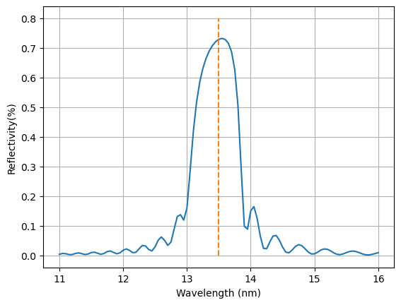

**SolverM**
SolverM: an efficient GPU-accelerated Solver for Maxwell's equations in
computational electromagnetics.
# **Introduction**
Understanding and controlling the interaction between light and matter
is crucial for physics and engineers. Despite ongoing efforts to develop numerical
techniques and deep learning approaches for forward simulation and inverse scattering problems, efficiently
solving for three-dimensional (3D) complex systems remains challenges.

**SolverM:** overcomes existing challenges to peform fast and rigorous simulations.
SolverM is effcient for simulating both subwavelength gratings and large-scale structures, providing high performance for accurate applications in optical metrology, computational lithography.
It also enables efficient simulation of large-scale metasurfaces and facilitates the design of photonic structures.
# **Tutorial**
The following sections provide examples and benchmarks for SolverM. Validation of SolverM is
conducted through published documentations. However, it's important to note that **comparisons are relative**, as variations in numerical
efficiency can arise from differences in simulation methods, programming languages,
simulation targets, computer resources... Our primary objective is to develop efficient
solutions for complex 3D nanostructures.
## **Basic**
‘SM.setup()’ function is used to setup simulation conditions by passing key parameters such as
wavelength_range: list of incident wavelengths, LxLy: periodic lengths, NxNy: simulation domain,
angle: incident angle and azimuth...
```python
device=torch.device('cuda' if torch.cuda.is_available() else 'cpu')
SM=SolverM()
SM.setup(wavelength_range=wavelength_range,
LxLy=[Lx,Ly], # periodic length
NxNy=[Nx,Ny], # simulation domain
angle=[AOI,Azimuth], # degree
e_ref=e_ref, # reflectance medium
e_trn=e_trn, # transmittance medium
source=source,
device=device,
dtype=torch.complex128
)
```
A nanostructure is defined by a list of all component layers. A grating layer is specified by
mask, grating material, medium material:
```python
layer['mask']=SM.Geometry.Rectangle(Wx=Wx,Wy=Wy)
layer['grating']={'eps': e_Si,'name':'Si'}
layer['medium']={'eps': e_air,'name':'air'}
layer['h']=h
```
For a complicated mask that is not in the library (Circle, Rectangle...), a user-defined
mask is used:
```python
layer['mask']=user-defined mask
```
A homogeneous layer is simply defined:
```python
layer['mask']=SM.Geometry.Homo()
layer['medium']={'eps': e_Si,'name':'Si'}
layer['h']=h
```
The SolverM also provides geometry visualization to help users verify nanostructures before
performing simulations. A detailed example of the visualization is presented in the next section.
The main part of the simulation is very simple:
```python
SM.sim (Geometry)
```
Then, we can calculate diffraction coefficients, optical responses: reflectance, transmittance,
absorbance, electromagnetic field....
## **Plasmonic sensor **
In the example, SolverM is used to simulate optical responses—Reflectance, Transmittance, and Absorbance of a
3D plasmonic biosensing in water.The plasmonic structure consists of Al nanoholes on homogeneous
layers of SiO2, Si, and Ge. More details can be found in **Rigorous coupled-wave analysis of a multi-layered plasmonic
integrated refractive index sensor** by
Schlipf and Inga A. Fischer, Optics express, 2021.
In SolverM, a structure is presented through its layer components.
A grating layer is defined by three attributes: mask, base material,
and grating material, while a homogeneous layer is defined by mask and
base material. The plasmonic structure is defined:
```python
e_m=[e_Al,e_SiO2,e_Si,e_Ge] #
material_name=['Al','SiO2','Si','Ge']
Geometry=[]
for lth in range(NL):
layer_lth={}
if lth ==0:
layer_lth['mask']=SM.Geometry.Circle(CD=Diameter)
layer_lth['grating']={'eps': e_water,'name':'water'}
layer_lth['medium']={'eps': e_m[lth],'name':material_name[lth]}
layer_lth['h']=h_Sim[lth]
else:
layer_lth['mask']=SM.Geometry.Homo()
layer_lth['medium']={'eps': e_m[lth],'name':material_name[lth]}
layer_lth['h']=h_Sim[lth]
Geometry.append(layer_lth)
```
To verify the geometry before performing simulations, SolverM offers
visualization of the defined geometry in the XY, XZ, and YZ planes.
Nanostructure dimensions are presented in pixel length (user define based on simulation domain).
In the XY plane, SolverM provides the option to display either all layers
or specific layers of interest within structure
The color_uf is used to customize visualization with user-defined colors.
```python
color_uf=['lime','brown','cyan','blue','gray']
SM.Geometry.XY(Geometry,pos_layer=[0,1,2,3],color=color_uf)
SM.Geometry.XZ_YZ(Geometry,color=color_uf)
```


**Simulation:**
SolverM requires less than 1s for *standard resolution*, and 5s for *fine resolution*
to compute optical responses at 81 wavelength points: Reflectance, Transmittance and Absorbance of
the 3D-plasmonic structure in water. SolverM is two orders of magnitude faster than than the method
described in this study..

## **Mueller Matrix Ellipsometry-Si gratings **
In the example, we reproduce the Mueller matrix obtained from ellipsometry measurement
of 2D Si gratings, adapted from **Comparison of spectroscopic Mueller polarimetry, standard
scatterometry, and real space imaging techniques (SEM and 3D-AFM) for dimensional characterization
of periodic structures**
by Martino et al.,SPIE Proc,2008.

Mueller matrix ellipsometry is a non-dectructive, non-contactct measurement technique to characterize
nanostructures.By measuring all polarizing states of the sample, Mueller matrix ellipsometry is very
sensitive to optical responses and has been extensively used for optical metrology applications.
The simulation of Mueller matrix ellipsometry is essential for solving inverse
problems to reconstruct nanostructures from experimental measurements.
In the example, SolverM is used to perform simulation of Muelller matrix from two sources: TM and TE modes,
over a broad wavelength range, and wide range of azimuth angles.
**Simulation:**
SolverM requires about 1s to compute the Mueller matrix of AOI=45, Azimuth
=[0, 15, 30, 45, 60, 75, 90].

## **Mo/Si multilayer stacks**

SolverM is used to compute the reflectivity of a molybdenum/silicon (Mo/Si) multilayer stack,
commonly employed in current EUV systems. The stack consists of 40 alternating layers of Mo
and Si, with Mo layers 3 nm thick and Si layers 4 nm thick.
The refractive indices of Mo and Si are 0.91943 + 0.00663i and 0.99875 + 0.00183i, respectively.
Reflectivity is calculated as a function of wavelength, ranging from 11 to 16 nm,
at an incident angle of 6°. At the operating wavelength of 13.5 nm, the reflectivity reaches
approximately 70%

## **Au nanoantenna**
In this example, we simulate the reflectance/transmitance spectrum of arrays of gold nanobars periodically
(square lattice) placed on a silicon substrate in the research article by
**Angle-and polarization-dependent collective excitation of plasmonic nanoarrays for surface enhanced
infrared spectroscopy** by [H.Altug et al.2011](https://opg.optica.org/oe/fulltext.cfm?uri=oe-19-12-11202&id=214241)
The structure is designed for the normal-incidence peak response of the Amide I protein at wave number of
1650 cm-1. The figure below shows the reflectance of Au nanoantenna with periodic lengths of Px=Py=1750nm,
Wx=870nm, Wy=230nm, h=70nm. The refractive index of Au is taken from
[Olmon et al., 2012](https://journals.aps.org/prb/abstract/10.1103/PhysRevB.86.235147),
while the refractive index of Si is 3.21 for all incident wavenumbers.

## **EUV mask**
A typical extreme ultraviolet (EUV) mask consists of a TaN absorber layer on Mo/Si multilayers
to optimize optical efficiency. Simulating the near field of EUV masks with complex patterns is
crucial for computational lithography, as it enables the study of mask effects such as asymmetric shadowing, wavefront deformation,
and image contrast variations.

SolverM is used to simulate the electric field of an EUV mask with an absorber layer at an angle of
incidence (AOI) of 6°, and feature dimensions of wx=wy=50nm,The layer thickness is
h=50nm with a periodic length of Px=Py=150nm. The absorber layer is placed on 40 pairs of Mo/Si multilayers,
where the Mo layer is 3nm thick and the Si layer is 2nm thick. At an incident wavelength of 13.5 nm,
the refractive index of the TaN absorber is 0.9385+0.03776ùëñ
Mo is 0.91943+0.00663i, and Si is 0.99875+0.00183i.
**Simulation time**: accelerated by GPU, SolverM computes the near field of the EUV mask in less than 1 second.

## **GaN super cell**
In this example, SolverM is used to simulate the diffraction efficiency of μm-scale 3D metasurface arrays in
**Global optimization of metasurface designs using statistical learning methods**
by Elsawy et al., Scientific Reports, 2019.. The structure consists GaN cylindrical nanoridges on
top of Al2O3 substrate.
A customized mask is used to define the GaN super cell pattern.
```python
layer_lth['mask']=customized mask
layer_lth['grating']={'eps': e_GaN,'name':'GaN'}
layer_lth['medium']={'eps': e_air,'name':'air'}
```
SolverM displays the GaN super cell in pixels (1 pixel =1 nm) for the simulation.
**Simulation time:**
It takes approximately 2s to compute the Transmittance and Diffraction Efficiency for
the first order of the TM polarized wave.

# **Contact**
While SolverM demonstrates impressive performances, it is still in its early stages and requires further development.
Please feel free to reach out for more information:
**Email:** phamhoanglam.fr@gmail.com